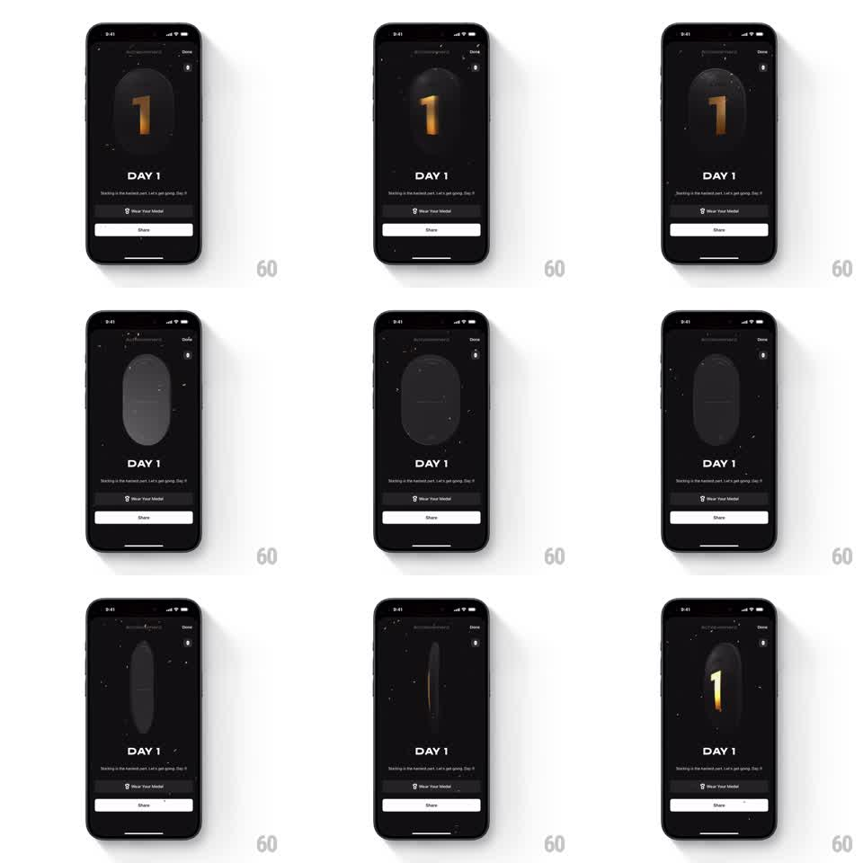

Media
Frame-by-frame

Rebuild this interaction 1:1: Any Distance's achievement medal - a 3D capsule medal with a gold numeral floats on a dark "DAY 1" screen, and flicking it sends it spinning with real inertia that decays over several seconds.

Rebuild this interaction 1:1: Any Distance's achievement medal - a 3D capsule medal with a gold numeral floats on a dark "DAY 1" screen, and flicking it sends it spinning with real inertia that decays over several seconds. ## Integration Integration: stack-agnostic spec - springs given as stiffness/damping, timed motions as duration + curve; map every value to your framework and animation library of choice. ## Scene Near-black screen with faint star specks. Top bar: achievement label, Done action, small info icon. Center: a dark 3D capsule medal standing upright, gold "1" embossed on its face, lit from above with a soft glow. Below: "DAY 1" title, a one-line caption, a "Wear Your Medal" row, and a full-width Share button. ## Motion spec Pattern: flickable 3D medal with inertial spin. - Idle: the medal sways gently (rotationY +-8deg, 3s sine) with a slow light sweep across its face. - A horizontal flick applies angular velocity proportional to the flick speed (rotationY around the medal's vertical axis); the spin decays exponentially (friction ~0.92 per frame at 60fps) over 3 to 5 seconds. - During spin the medal is a true 3D object: it foreshortens edge-on and the gold face catches light once per revolution (specular highlight sweep). - Dragging without flicking rotates the medal 1:1 with the finger and holds on release. - A fast flick can also tilt the capsule (rotationX +-10deg) which settles back with a spring (stiffness ~120, damping ~10). ## Calibration - Inertia decay is the toy: too fast feels stiff, too slow feels like a fidget spinner - 3 to 5 seconds to rest is the pocket. - The face must be readable at rest; clamp the idle sway so the numeral never turns away fully. ## Reduced motion Medal is static; flick rotates it 90deg with a 300ms ease instead of a free spin. ## Don't miss - The medal is a capsule (rounded-top slab), not a coin - its silhouette at edge-on is a thin rounded bar. - The star specks in the background drift almost imperceptibly (parallax against the medal).